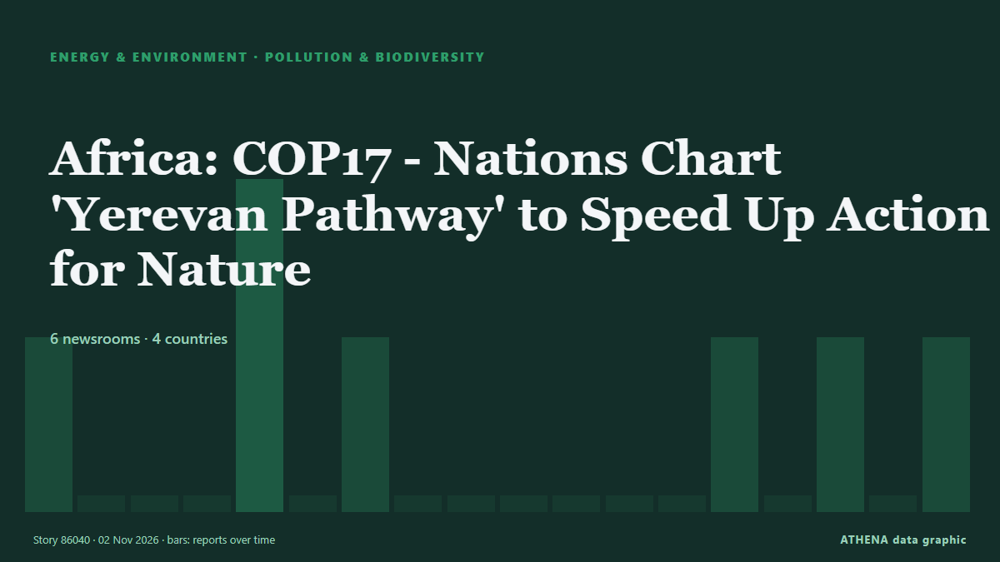

التلوث والتنوع الحيوي
برعايةبرعاية  Cybernetics and Artificial Intelligence Lab Welcome to the Cybernetics and Artificial Intelligence Laboratory, established at the Department of Business Administration of the National
Cybernetics and Artificial Intelligence Lab Welcome to the Cybernetics and Artificial Intelligence Laboratory, established at the Department of Business Administration of the National
| 20 أكتوبر | 0 |
|---|---|
| 21 أكتوبر | 0 |
| 22 أكتوبر | 0 |
| 23 أكتوبر | 0 |
| 24 أكتوبر | 0 |
| 25 أكتوبر | 0 |
| 26 أكتوبر | 0 |
| 27 أكتوبر | 0 |
| 28 أكتوبر | 1 |
| 29 أكتوبر | 1 |
| 30 أكتوبر | 8 |
| 31 أكتوبر | 3 |
| 1 نوفمبر | 2 |
| 2 نوفمبر | 0 |
تُعرض العناوين بالإنجليزية كما نُشرت.

Africa: COP17 - Nations Chart 'Yerevan Pathway' to Speed Up Action for Nature
[UN News] At the halfway mark to 2030, countries meeting in Armenia have agreed a roadmap to accelerate action for nature, after a global review found the world off track to meet its biodiversity… من AllAfrica
For M’sian runners, Jakarta is as much about friendship as the finish line
Members of the Haze Runners Club recently travelled to the Indonesian capital for a weekend filled with big crowds and a very different running atmosphere. من Free Malaysia Today
Slovenia presses ahead with Mokrice dam project
Slovenia's government has decided that the energy benefits of a planned hydropower plant on the Sava River in south Slovenia outweigh the public interest in nature conservation, clearing a key hurdle… من Slovenia Times (alternative feed)
Iran ready to join three initiatives at COP17 on biodiversity conservation
Tehran, IRNA – Iran has expressed readiness to join three initiatives launched at the proposal of the presidency of the 17th Conference of the Parties to the Convention on Biological Diversity (CBD… من IRNA (English)
COP17 | Jiangsu Showcases Biodiversity Conservation in Action
Media OutReach Newswire – 29 October 2026 – Jiangsu Day, a themed event at the China Pavilion during the 17th meeting of the Conference of the Parties to the Convention on Biological Diversity… من Laotian Times
UAE brings oil tanker leak under control, coastal cleanup continues
DUBAI: The UAE has brought an oil tanker leak under control, with no new leakage detected, as environmental cleanup operations continued along coastlines affected by the spill, the Emirates News… من Arab News
Infected hay bales to be buried in a safe location
Hay bales contaminated with the food and mouth virus (FMD) that were intended to be buried in Troulli will be moved to another safe location so as not to affect livestock units in the adjacent areas… من Cyprus Mail
Damen signs deal with Lithuanian Navy for SAR vessel
Damen Shipyards Group has signed a contract to build a pollution incident response and search and rescue (SAR) vessel for the Lithuanian Navy.... من Naval Today
For many, striped bass fishing is a way of life. But the iconic species could face collapse
Striped bass fishing has been Bill Jakob's passion for more than 60 years, and he remembers an era when he'd spend all night casting his line into the crashing waves off Montauk and get eight or nine… من Phys.org
India’s animal centre vows reset after criticism
JAMNAGAR: Behind guarded gates resembling a maharajah’s palace are hundreds of elephants and big cats, giraffes grazing in a mock savannah, and chimpanzees and orangutans swinging from ropes. من Dawn